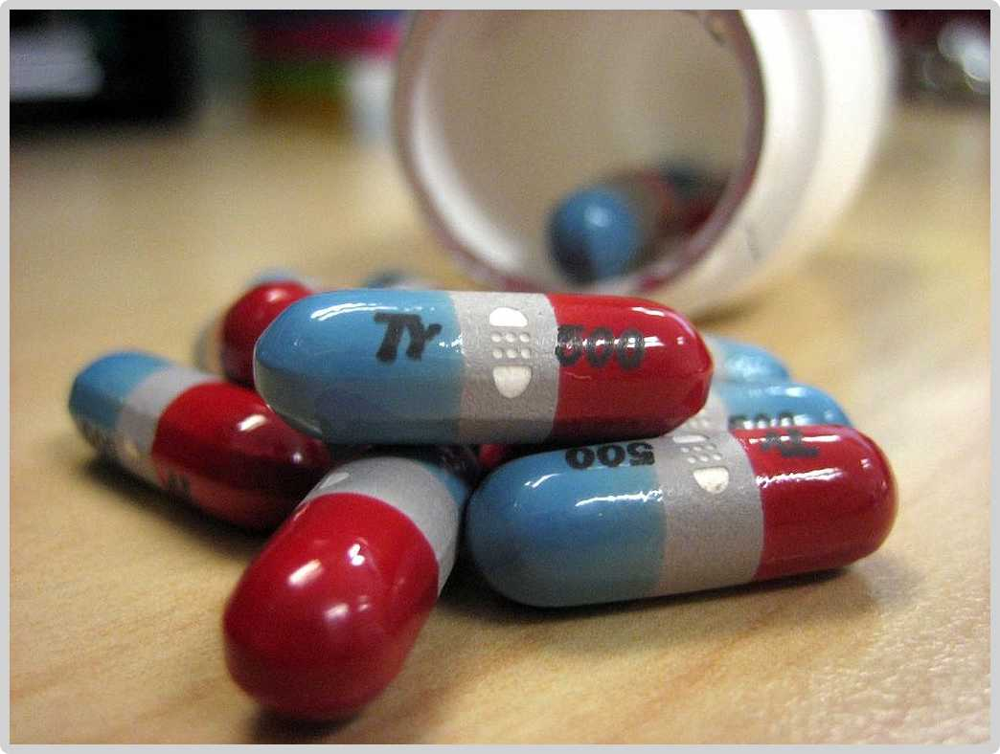
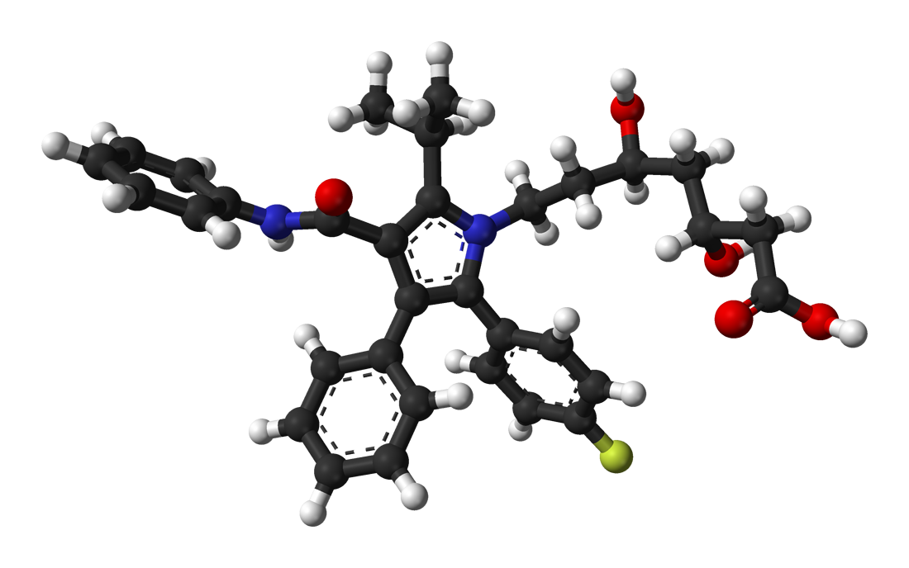

Medicines must be effective (to treat the disease or ailment), safe (not have side effects), and stable (so that they can be stored for a long time).
Developing medicines is a long-term process. Companies want to make profits from the years of research and testing, so drugs are often patented.
 Drugs take years to develop, but the profits can make this worthwhile
New medicines (drugs) are initially tested on different human cells in the lab, then on animals, then in long-term clinical human trials.
The lab tests confirm if the drug works against the disease; the animal tests show how a whole living creature reacts and in what dose; the human trials confirm if the drug really works for humans, and is safe.
Volunteers for human trials of a drug have the disease. A control group in the trial receives the currently-used drug or a placebo (e.g. a fake pill with no drug in it). If the drug being investigated works, placebo patients’ health may get worse. Yet trials ‘need this to happen’ to compare.
In blind trials doctors know they are giving the drug but patients do not. The doctor can then look out for particular effects.
In double-blind trials neither the doctor nor the patient knows if the drug is being given. In this way it is impossible for either of them to make any biased judgments. A third party makes the judgments.
In open label trials the patient and doctor are both aware of the treatment. Often this occurs in a situation of ‘last resort’, for patients almost certain not to recover. No placebo is given here.
Case studies: thalidomide, statins (AQA)
Thalidomide was developed as a sleeping pill in the 1950s. Later it was also found to stop morning sickness in pregnant women. It became a common prescribed drug.
However, it was not as fully tested as new drugs are tested today. Sadly, many pregnant women who took the drug found that their babies were born with severe limb deformities.
Today, thalidomide is still used, with great caution, to treat some forms of cancer. This tells us that drugs and medicines are a difficult moral topic: no drug can be guaranteed completely safe, while at the same time some drugs are not always completely bad for us, either.
Statins are drugs that help the liver to reduce cholesterol in the blood. High blood cholesterol is thought to increase the risk of heart disease, heart attacks and strokes. Statins therefore help to control a very common modern health problem.
 This 3D model shows the structure of Atorvastatin, one of the best-selling drugs in the world. Its annual sales add up to billions of dollars
However, there are concerns that these relatively new drugs may affect the liver in additional ways: the theoretical possibility exists that they may damage it. Evidence suggests that statins can raise liver enzymes above normal levels; sometimes they also cause muscle cramp.
The effects of statins are still being studied. Although they are thought to be very safe, a doctor cannot be sure at the outset which statin may have adverse effects on a particular patient.